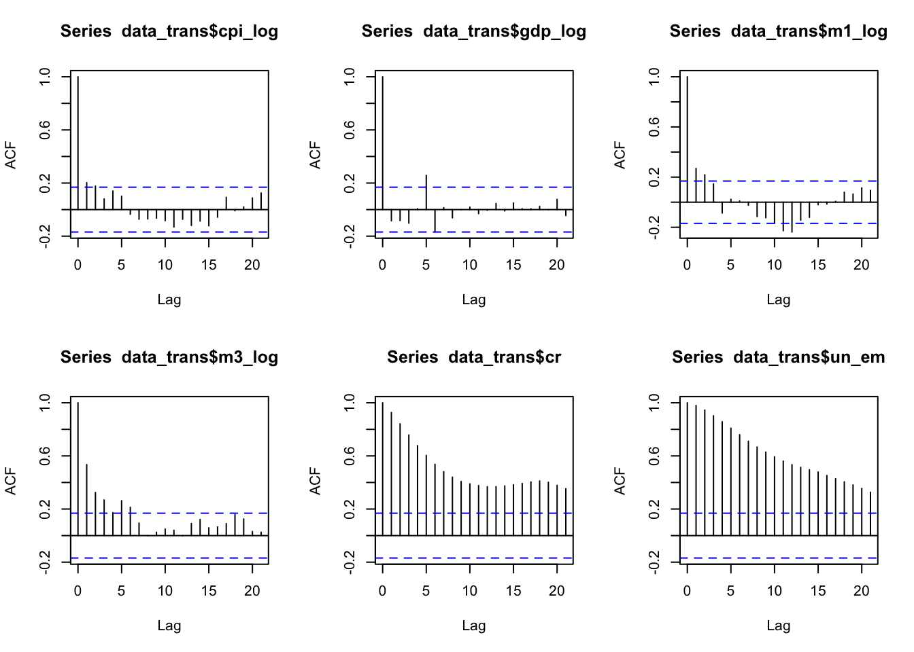
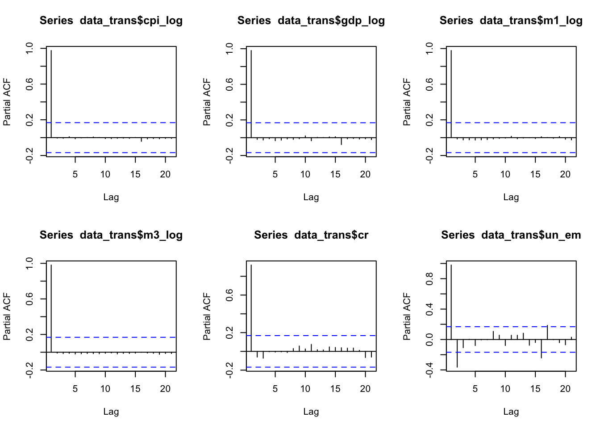

Forecasting Inflation and Interest Rate in Australia
Abstract. This paper forecasts Australian inflation and interest rate using Bayesian Vector Regressive Model with Stochastic Volatility and a multivariate-t distributed error, with the purpose of allowing time varying volatility and capturing sudden increase in volatility during extreme period such as COVID-19.It is an application of such method, which is suggested as a significant improvement over a standard BVAR, to the Australian macroeconomic variables to generate spot and density forecast using post-COVID data.
Keywords. BVARs, Stochastic Volatility, t-distributed error, inflation, interest rate, Australian economy
Introduction
Objective: This paper aims to forecast Australian short term interest rate and inflation. It follows the method in Hartwig(2022), using a BVAR-SV model with its error covariance matrix being multivariate-t distribution.
Question: Can the model suggested produce reliable spot and density forecast for Australian inflation and interest rate?
Motivation: Volatility variation across time in macroeconomic variables is widely explored in literature(Bloom,2014), which the standard Gaussian error modeling may fail to capture and then leads to unreliable results. Hartwig(2022) suggests that several BVAR models with modified volatility distribution which differentiate from the standard Gaussian perform better under likelihood measurement. The best fitting one with post-COVID19 data is BVAR-t-SV. The stochastic process captures the time persistence of volatility, which is evident in variables such as short term interest rate(Ball and Torous,1999). A multivariate-t distributed error, with relatively fatter tails, can recognize some extreme volatility as temporary spikes instead of persistent effect. The forecast focus on inflation and interest rate due to their strong relevance to policy making and people’s daily lives. Many challenges arise post-COVID for government to facilitate the revitalization of the economy, where forecast plays its roles.
Data
All data is obtained from the RBA. Daily or monthly data is converted to quarterly format by averaging. Following Chan(2020), other than cash rate and unemployment, variables will be transformed using log difference times 400 in BVAR as a form of growth. These are some standard variables to include in a macroeconomics forecast:
Cash rate: the cash rate target in percent (series_id:FIRMMCRTD)
Money aggregate(M1): the seasonal adjusted M1 aggregate in $billion (series_id:DMAM1S)
Money aggregate(M3): the seasonal adjusted M3 aggregate in $billion (series_id:DMAM3S)
Consumer Price Index Consumer Price Index (series_id:GCPIAG)
Real GDP: Gross Domestic Product in real terms in $million (series_id:GGDPCVGDP)
Unemployment: Unemployment rate in percent (series_id:GLFSUPSA)
The data window covers 1990 Q1 to 2023 Q4, as the most up-to-date post-COVID data in Australia, similar to Hartwig(2022). Cash rate, real GDP and unemployment rate are very standard variables to include while doing forecast with inflation as the cyclical variables(eg.Stock and Watson(1999)). Money aggregate as a supply side driver for commodity price, are included as well(eg. Dhakal et al(1994)).
Time Series Plot
The following are the time series plot of raw CPI, real GDP, M1 and M3 monetary aggregate, unemployment rate and cash rate on quarterly basis. Note the former 4 variables all display a clear growth trend. Unemployment and cash rate are generally decreasing with fluctuations.
The 400 times log difference of CPI, real GDP, M1 and M3 aggregate were plotted here. They seem stationary around a fixed mean. This will be tested later.

ACF and PACF


Augmented Dickey-Fuller
Augmented Dickey-Fuller Test
data: data_trans$cpi_log
Dickey-Fuller = -3.8653, Lag order = 5, p-value = 0.01796
alternative hypothesis: stationary
Augmented Dickey-Fuller Test
data: data_trans$gdp_log
Dickey-Fuller = -5.762, Lag order = 5, p-value = 0.01
alternative hypothesis: stationary
Augmented Dickey-Fuller Test
data: data_trans$m1_log
Dickey-Fuller = -3.7918, Lag order = 5, p-value = 0.02154
alternative hypothesis: stationary
Augmented Dickey-Fuller Test
data: data_trans$m3_log
Dickey-Fuller = -2.9958, Lag order = 5, p-value = 0.1622
alternative hypothesis: stationary
Augmented Dickey-Fuller Test
data: data_trans$cr
Dickey-Fuller = -4.3135, Lag order = 5, p-value = 0.01
alternative hypothesis: stationary
Augmented Dickey-Fuller Test
data: data_trans$un_em
Dickey-Fuller = -2.4522, Lag order = 5, p-value = 0.3884
alternative hypothesis: stationary| Variable | ADF_stats | p_value |
|---|---|---|
| CPI_log | -3.8653 | 0.01796 |
| GDP_log | -5.765 | 0.01 |
| M1_log | -3.7918 | 0.02154 |
| M3_log | -2.9958 | 0.1622 |
| Cash rate | -4.3135 | 0.01 |
| Unemployment | -2.4522 | 0.3884 |
Model
Here presents the Bayesian VAR with Stochastic Student-t volatility, the general form of a VAR(p):
\[y_t = a_0 +A_1y_{t-1}+...+A_py_{t-p}+ \epsilon_t \]
where \(y_t\) is a \(n \times 1\) vector and \(n\) is the number of variables. \(a_0\) is the \(n \times 1\) intercept vector. \(A_p\) is \(n \times n\) coefficient matrix for each lag order \(p\). Put it in compact matrix notation:
\[Y = XA+E\] where \(Y_{T \times n}=(y_1', y_2',...,y_T')'\), \(X_{T \times K}=(x_1', x_2',...,x_T')'\). Each \(x_{K \times 1}=(1, y_{t-1}',...,y_{t-p}')'\). \(A\) is a compact coefficient matrix \(A_{K \times n}=(a_0', A_1',...,A_p')'\) and \(E_{T \times n}=(\epsilon_1', \epsilon_2',...,\epsilon_T')'\). Note, \(K = 1+pn\).
In standard form, the error term is normally distributed \(\epsilon_t \sim iidN(0, \Sigma)\), or \(E \sim MN(0, \Sigma \otimes I_T)\). \(\Sigma\) is a \(n \times n\) covariance matrix and \(I_T\) is an \(T \times T\) identity matrix. In this paper, following Hartwig(2022), I use the specification:
\[\epsilon_t \sim N(0, \Sigma \cdot \lambda_t \cdot exp(h_t))\]
where \(\lambda_t \sim IG(\nu/2,\nu/2)\) and \(h_t\) follows: \(h_t = \rho h_{t-1}+ \epsilon^{h}_{t}\), with \(|\rho|< 1\) and \(\epsilon^{h}_{t} \sim N(0, \sigma^{2}_h)\). Then the compact distribution of \(E \sim MN(0,\Sigma \otimes \Omega)\).
References
Ball, C. A., & Torous, W. N. (1999). The Stochastic Volatility of Short-Term Interest Rates: Some International Evidence. The Journal of Finance, 54(6), 2339–2359. http://www.jstor.org/stable/797997
Bloom, N. (2014). “Fluctuations in Uncertainty.” Journal of Economic Perspectives, 28 (2): 153-76. DOI: 10.1257/jep.28.2.153
Chan, J. C. C. (2020). Large Bayesian VARs: A Flexible Kronecker Error Covariance Structure. Journal of Business & Economic Statistics, 38(1), 68–79. https://doi.org/10.1080/07350015.2018.1451336
Hartwig, B(2022). Bayesian Vars and Prior Calibration in Times of COVID-19. Deutsche Bundesbank Discussion Paper No. 52/2022. https://dx.doi.org/10.2139/ssrn.4350794
Stock, H. J., & Watson, W. M. (1999). Forecasting Inflation. Journal of Monetary Economics, 44(2), 293–335. https://doi.org/10.1016/S0304-3932(99)00027-6
Dhakal, D., & Kandil, M.&Sharma, S,C. &Trescott, P,B. (1994). Determinants of the inflation rate in the United States: A VAR investigation. The Quarterly Review of Economics and Finance 34(1), 95-112. https://doi.org/10.1016/1062-9769(94)90055-8